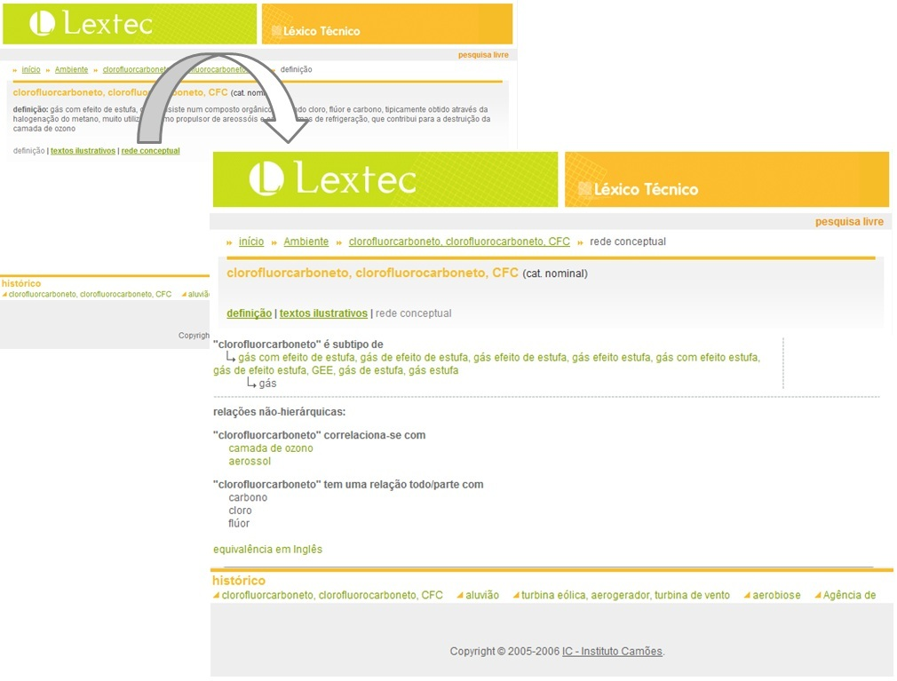
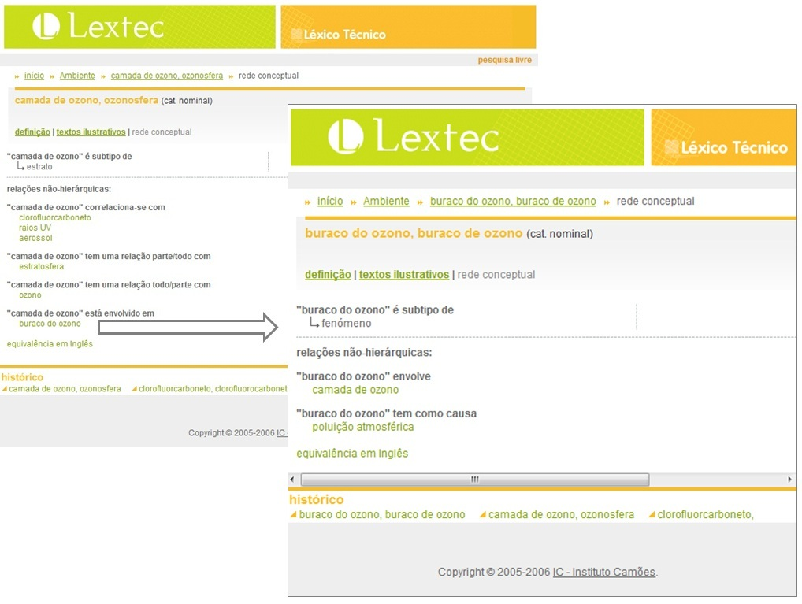

Os conteúdos trabalhados e disponibilizados no âmbito do projecto Lextec estão organizados num
conjunto de recursos que inclui: um glossário que integra expressões linguísticas de domínios específicos,
bem como as respectivas definições; uma base de textos autênticos que ilustram os contextos de uso das
expressões em questão e/ou fornecem informações adicionais de interesse para a compreensão dos
conceitos envolvidos; uma rede conceptual (wordnet) que relaciona entre si as expressões com o mesmo significado, que,
por seu turno, são relacionadas com outras, especificando ainda, para todas as expressões, relações de
correspondência com expressões em Inglês. Das relações estruturantes especificadas na rede,
destacam-se as relações de sinonímia, hiponímia/hiperoníma e
meronímia/holonímia. Adicionalmente é também especificado um grande número de
relações que envolvem a estrutura dos eventos e as entidades neles participantes, genericamente designadas como
relações de função, bem como relações que permitem definir o significado de cada nó
da rede com maior precisão, em particular uma série de relações
inter-categoriais. [para saber mais]
Os conteúdos disponibilizados cobrem dez domínios de especialidade: Ambiente; Banca; Comércio;
Construção Civil; Energia; Seguros; Telecomunicações; Turismo; Direito Comercial Internacional;
e Economia e Gestão de Empresas.
Toda a informação codificada é tornada acessível ao utilizador através de uma interface flexível
e intuitiva, que permite uma navegação ágil dentro de cada um dos domínios de especialidade.
Apresentação da informação em cada entrada
Ao seleccionar uma determinada expressão para consulta, seja através da pesquisa livre, seja através das listas organizadas alfabeticamente para cada área, tem acesso a toda a informação referida na secção anterior, apresentada tal como ilustrado abaixo.
Cada conceito codificado na base de dados do projecto Lextec, e pesquisável através da interface de disponibilização na internet, está associado a diferentes tipos de informação, nomeadamente uma definição do conceito na área de especialidade considerada, textos ilustrativos do uso das expressões que integram o conjunto de sinónimos que denota o conceito em causa e uma rede conceptual que relaciona o conceito considerado com outros também codificados na rede que têm com ele relações de significado. O utilizador pode escolher qual dos 3 tipos de informação pretende consultar clicando no respectivo link, tal como se apresenta abaixo.
Seleccionando o link para visualizar os textos ilustrativos obtém-se uma janela como a que se apresenta abaixo.
Resta então explorar a janela de visualização da rede conceptual associada ao conceito pesquisado, seleccionando o link respectivo tal como se apresenta abaixo.

A janela que se abre permite visualizar a rede conceptual associada ao conceito pesquisado, bem como navegar na rede. Por exemplo, quando a expressão seleccionada faça parte de uma subrede com grande profundidade, poderá visualizar mais níveis, tanto de subtipos como de supertipos (sempre que estes estejam disponíveis para o conceito consultado), clicando na expressão [ver mais], tal como apresentado abaixo.
Outro aspecto a sublinhar no que respeita à navegação na interface prende-se com a possibilidade de passar de um conceito a outro com ele relacionado clicando apenas na expressão que o denota, dado que todos os conceitos referidos numa entrada que está a ser consultada, desde que estejam codificados na base de dados do Lextec, são ligações para a entrada em que são caracterizados. Esta navegação está limitada à mesma área de especialidade, não havendo cruzamentos entre os diferentes domínios.

As relações léxico-conceptuais expressas na rede
Tal como referido na primeira secção desta página, existe uma grande diversidade de relações léxico-conceptuais expressas nas wordnets que integram os resultados disponibilizados do projecto Lextec e que podem ser consultadas nas páginas de resultados apresentadas para cada termo pesquisado. Nesta secção explicita-se, com a ajuda de exemplos, em que consiste cada uma das relações utilizadas na organização da rede de conceitos disponibilizados.
As relações implementadas neste projecto são as seguintes:
A relação de supertipo (hiperonímia) é uma relação assimétrica, inversa da relação de subtipo, que corresponde grosso modo à noção de definição de uma classe. Em termos informais, os supertipos devem respeitar as seguintes condições:
A é supertipo de B
se
A não é um (tipo de) B
e
B é um (tipo de) A
Vejamos os seguintes exemplos:
a. Se o João comprou um telefone então o João comprou um telefone fixo. Falso
b. Se o João comprou um telefone fixo então o João comprou um telefone. Verdadeiro
c. Se A é um telefone, A não é um (tipo de) telefone fixo
d. Se B é um telefone fixo, B é um (tipo de) telefone
Logo: telefone é supertipo de telefone fixo (e telefone fixo é subtipo de telefone)
Estes exemplos evidenciam uma maior especificidade de telefone fixo relativamente a telefone, ou seja, telefone fixo tem todas as propriedades de telefone (e mais algumas), mas telefone não tem todas as propriedades de telefone fixo. Esta relação implica que o supertipo pode substituir os seus subtipos em contextos referenciais, mas que o inverso não se verifica. Este facto é particularmente evidente em contextos de recuperação anafórica, em que o supertipo retoma o conteúdo de um seu subtipo.
e.O João estragou o telefone fixo do irmão. Este telefone é de cor cinzenta.
A relação de subtipo (hiponímia) é uma relação assimétrica, inversa da relação de supertipo, e que corresponde grosso modo à noção de pertença a uma classe. Em termos informais, os subtipos devem respeitar as seguintes condições:
A é subtipo de B
se
A é um (tipo de) B
e
B não é um (tipo de) A
Vejamos os seguintes exemplos:
a. Se o João usou energia hídrica então o João usou energia mecânica. Verdadeiro
b. Se o João usou energia mecânica então o João usou energia hídrica. Falso
c. Se A é energia hídrica, A é um (tipo de) energia mecânica
d. Se B é energia mecânica, B não é um (tipo de) energia hídrica
Logo: energia hídrica é subtipo de energia mecânica (e energia mecânica é supertipo de energia hídrica)
Estes exemplos evidenciam uma maior especificidade de energia hídrica relativamente a energia mecânica, ou seja, energia hídrica tem todas as propriedades de energia mecânica (e mais algumas), mas energia mecânica não tem todas as propriedades de energia hídrica.
Pode dizer-se dos nomes comuns, que designam classes de entidades, que são exemplificados por uma dada entidade individual (designada por um nome próprio). Para exprimir esta relação assimétrica entre uma classe de entidades e a entidade individual que a instancia utiliza-se a relação de instanciação. Em termos informais, para que A seja instanciado por B devem respeitar-se as seguintes condições:
A é instanciado por B
se
B é um nome próprio,
B é um A
e
A não é um B
Vejamos os seguintes exemplos:
a. Se a Ana visitou o Forte de Sagres então a Ana visitou uma fortaleza. Verdadeiro
b. Se a Ana visitou uma fortaleza então a Ana visitou o Forte de Sagres. Falso
Logo: fortaleza é instanciada por Forte de Sagres
Pode dizer-se das entidades individuais, designadas pelos nomes próprios, que são exemplo de uma determinada classe de entidades (designada por um nome comum). Para exprimir esta relação assimétrica entre uma entidade individual e a classe que instancia utiliza-se a relação de instanciação. Em termos informais, para que A seja uma instanciação de B devem respeitar-se as seguintes condições:
A é instanciação de B
se
A é um nome próprio,
A é um B
e
B não é um A
Vejamos os seguintes exemplos:
a. Se a Ana trabalha na Torre dos Clérigos então a Ana trabalha num monumento. Verdadeiro
b. Se a Ana trabalha num monumento então a Ana trabalha na Torre dos Clérigos. Falso
Logo: Torre dos Clérigos é instanciação de monumento
Mais do que uma relação, a ligação entre o todo e as partes corresponde a uma complexa família de relações cuja não uniformidade diz respeito a aspectos como o grau de integração, de independência e de motivação da parte relativamente ao todo. Entre os diferentes tipos de relação todo/parte que se incluem nesta família de relações destacam-se as que explicitam a relação que se estabelece:
entre um conjunto de entidades e os seus membros;
entre um nome considerado como um todo e as suas partes constituintes;
entre uma porção e o todo do qual esta foi separada;
entre uma entidade concreta e a substância de que esta é feita;
entre uma zona e uma zona mais vasta que inlcui a primeira.
Trata-se de uma relação assimétrica que pode ainda ser facultativa em qualquer dos dois sentidos, como no caso de puxador e porta, em que puxador é parte de porta, mas não necessariamente, podendo ser também parte de gaveta, janela ou portão, por exemplo, e porta tem como parte puxador, mas não necessariamente. Assim, para além de assimétrica, esta é também uma relação com restrições.
x tem uma relação todo/parte com
Em termos informais, e de um modo geral, podemos definir esta família de relações nos seguintes termos:
A tem como parte B
se
B faz parte de A
e A tem B
Neste caso, por exemplo, a biosfera tem ecossistemas e ecossistema faz parte da biosfera, não sendo o inverso verdade: ecossistema não tem biosferas e biosfera não faz parte de ecossistema. Logo biosfera tem uma relação todo/parte com ecossistema.
Em termos informais, e de um modo geral, podemos definir esta família de relações nos seguintes termos:
A é parte de B
se
A faz parte de B
e B tem A
Neste caso, por exemplo, ecossistema faz parte da biosfera e biosfera tem ecossistemas, não sendo o inverso verdade: biosfera não faz parte de ecossistema e ecossistema não tem biosferas. Logo ecossistema tem uma relação parte/todo com biosfera.
A relação de sinonímia é uma relação básica na construção de uma wordnet. Cada nó da rede representa um conceito e especifica todas as lexicalizações desse conceito (um conjunto de sinónimos).
No sentido original, a relação de sinonímia entre duas expressões é entendida como uma relação absoluta, definida relativamente ao impacto que a substituição de uma pela outra tem numa frase em termos de valor de verdade. Em termos informais, os sinónimos absolutos ou verdadeiros, devem respeitar as seguintes condições:
A e B são sinónimos se e só se a substituição de A por B ou de B por A nunca alterar o valor de verdade da frase em que a substituição se verifica.
Por razões de economia, a sinonímia absoluta é um fenómeno raro, razão pela qual no quadro das wordnets a sinonímia deve entender-se num sentido mais fraco, com referência a um contexto. Este conceito é definido em Miller e Fellbaum (1990) nos seguintes termos:
“duas expressões são sinónimas num contexto linguístico C se a substituição de uma por outra em C não altera o valor de verdade de C”
Assim, na decisão quanto à existência de uma relação de sinonímia entre unidades lexicais, apoiada em testes linguísticos, uma das variáveis a ser tida em conta é o domínio semântico. Outro aspecto crucial a considerar é a simetria da relação de sinonímia que podemos observar abaixo.
se A e B são sinónimos (em C)
então
(i) um A é um B
e
(ii) um B é um A
Esta simetria, e este teste em particular, permite identificar as verdadeiras relações de sinonímia, distinguindo-as de pares de unidades lexicais que satisfazem o teste da substituição.
a. O João arrumou o telefone fixo num armário.
b. O João arrumou o telefone num armário.
c. Se A é um telefone fixo então A é um telefone. Verdadeiro
d. Se B é um telefone então B é um telefone fixo. Falso
Logo: A é um B não implica B é um A. => A e B não são sinónimos
e. O João partiu o telemóvel.
f. O João partiu o telefone móvel.
g. Se A é um telemóvel então A é um telefone móvel. Verdadeiro
h. Se B é um telefone móvel então B é um telemóvel. Verdadeiro
Logo: A é um B implica B é um A. => A e B são sinónimos
Em alguns casos, existem palavras que estabelecem entre si relações de grande proximidade sem que possamos, no entanto, considerá-las sinónimas, nomeadamente por não se comportarem em relação aos testes de substituição e de simetria tal como estabelecido na definição de sinonímia.
Para exprimir esta relação de quase-equivalência entre dois conceitos existe a relação de quase sinonímia. A quase sinonímia é também ela uma relação simétrica e é definida pelas seguintes condições:
se A e B são quase sinónimos
então
(i) um A é uma espécie de B
e
(ii) um B é uma espécie de A
Desta forma, a quase sinonímia permite-nos exprimir a existência de uma relação privilegiada de proximidade semântica entre co-hipónimos (conceitos que partilham um mesmo supertipo) que não chega, no entanto, a ser uma relação de equivalência.
a. Se A é um empréstimo então A é uma espécie de créditoVerdadeiro
b. Se B é um crédito então B é uma espécie de empréstimoVerdadeiro
Logo: empréstimo e crédito são quase sinónimos
Embora existam por vezes pequenas nuances de significado - a redução de argumentos das nominalizações, por exemplo - há nas línguas a possibilidade de denotar a mesma situação ou evento usando unidades lexicais de diferentes categorias gramaticais. Entre estas diferentes unidades lexicais existe portanto uma relação de correspondência transcategorial que, tal como as outras relações de equivalência, é uma relação simétrica que obedece às seguintes condições:
se A e B têm correspondência transcategorial
então
(i) se há uma situação de A, então alguma coisa B
e
(ii) se alguma coisa B, então há uma situação de A
Vejamos um exemplo para tornar esta definição mais clara:
a. Se há uma situação de capitalização, então há alguma coisa que capitalizaVerdadeiro
b. Se alguma coisa capitaliza, então há uma situação de capitalizaçãoVerdadeiro
Logo: capitalização e capitalizar têm correspondência transcategorial
A relação de antonímia é uma relação simétrica que exprime oposição conceptual entre dois nós na rede. Os antónimos constituem categorias contrastantes numa mesma dimensão, ou seja, entre as condições para que se verifique a relação de antonímia entre dois itens encontra-se, não só o contraste, mas também algumas propriedades partilhadas. Estas propriedades partilhadas correspondem, por exemplo, à existência de uma relação de co-hiponímia entre antónimos, em particular no caso de nomes e verbos antónimos. Assim, em termos informais, podemos definir as condições a que obedece a relação de antonímia do seguinte modo:
A e B são antónimos
se
A e B são ambos um tipo de C
e
(i) se X é A
então
(ii) X não é B
e
(iii) se X é B então não é A
Vejamos um exemplo para tornar esta definição mais clara:
a. Se embarcar e desembarcar são ambos deslocar-se
b. Se uma entidade embarca, então essa mesma entidade não desembarca
c. Se uma entidade desembarca, então essa mesma entidade não embarca
Logo: embarcar é antónimo de desembarcar e desembarcar é antónimo de embarcar
Um outro aspecto crucial no que respeita a esta relação é o seu estatuto: a antonímia é determinada ao nível lexical, não basta que se verifique oposição conceptual para que duas palavras sejam antónimas. Assim, por exemplo, embora comprido e longo sejam sinónimos e se oponham conceptualmente a curto, apenas curto e comprido são antónimos. Deste modo esta é uma relação entre itens lexicais e não entre conjuntos de sinónimos (i.e. nós da rede).
A relação de quase antonímia é uma relação simétrica que exprime oposição conceptual entre dois nós na rede. Os quase antónimos constituem categorias contrastantes numa mesma dimensão, ou seja, tal como vimos para a relação de antonímia, entre dois itens quase antónimos verifica-se, não só um contraste, mas também algumas propriedades partilhadas. Estas propriedades partilhadas correspondem, por exemplo, à existência de uma relação de co-hiponímia entre quase antónimos, em particular no caso de nomes e verbos quase antónimos.
Ao contrário do que acontece com a relação de antonímia, a relação de quase antonímia corresponde apenas a oposição conceptual entre dois nós na rede e é, por isso, uma relação entre conjuntos de sinónimos.
Em termos informais, podemos definir as condições a que obedece a relação de quase antonímia do seguinte modo:
A e B são quase antónimos
se
A e B são ambos um tipo de C
e
(i) se X é A
então
(ii) X não é B
e
(iii) se X é B então não é A
Vejamos um exemplo para tornar esta definição mais clara:
a. Se zona rural e zona urbana são ambas áreas
b. Se existe uma entidade que é uma zona rural, então essa mesma entidade não é uma zona urbana
c. Se existe uma entidade que é uma zona urbana, então essa mesma entidade não é uma zona rural
Logo: zona rural é quase antónimo de zona urbana e zona urbana é quase antónimo de zona rural
Uma das características mais prototípicas dos adjectivos consiste no papel que desempenham relativamente ao nome. Para a grande classe dos adjectivos descritivos este papel consiste em atribuir um valor de um atributo ao nome modificado. Existe, assim, uma relação privilegiada entre cada um destes adjectivos e um dado atributo. A relação é caracterizável por explicita esta ligação. Trata-se de uma relação assimétrica que pode definir-se informalmente nos seguintes termos:
A é caracterizável por B
se
A é um nome denotador de uma propriedade
B é um adjectivo
e
B fixa um valor do atributo A
Por exemplo, impermeável fixa um valor do atributo permeabilidade, determinando um valor nulo para este atributo. Logo permeabilidade é caracterizável por impermeável. Esta relação é inversa da relação caracteriza quanto a pelo que se permeabilidade é caracterizável por impermeável, então impermeável caracteriza quanto à permeabilidade.
A relação caracteriza quanto a explicita a ligação entre um adjectivo e um dado atributo. Trata-se de uma relação assimétrica que pode definir-se informalmente nos seguintes termos:
A caracteriza quanto a B
se
A é um adjectivo
B é um nome denotador de uma propriedade
e
A fixa um valor do atributo B
Por exemplo, impermeável fixa um valor do atributo permeabilidade, determinando um valor nulo para este atributo. Logo impermeável caracteriza quanto à permeabilidade. Esta relação é inversa da relação é caracterizável por pelo que se impermeável caracteriza quanto à permeabilidade, então permeabilidade é caracterizável por impermeável.
Os nomes que partilham um mesmo supertipo (co-hipónimos) distinguem-se do seu supertipo e dos seus nós irmãos por uma determinada diferença específica. Estas propriedades distintivas dos nomes são frequentemente lexicalizadas por expressões adjectivais. A relação é característica de permite explicitar diferenças específicas na rede, ligando cada nome às expressões adjectivais que lexicalizam as suas propriedades distintivas. Trata-se de uma relação assimétrica, facultativa em ambos os sentidos, que pode definir-se informalmente nos seguintes termos:
A é característica de B
se
A é um adjectivo
B é um nome
e
A é uma propriedade distintiva de B
Por exemplo, inflamável é uma propriedade distintiva de gasolina. Logo inflamável é característica de gasolina. Esta relação é inversa da relação tem como característica ser pelo que se inflamável é característica de gasolina, então gasolina tem como característica ser inflamável.
A relação tem como característica ser permite explicitar diferenças específicas na rede, ligando cada nome às expressões adjectivais que lexicalizam as suas propriedades distintivas. Trata-se de uma relação assimétrica, facultativa em ambos os sentidos, que pode definir-se informalmente nos seguintes termos:
A tem como característica ser B
se
A é um nome
B é um adjectivo
e
B é uma propriedade distintiva de A
Por exemplo, inflamável é uma propriedade distintiva de gasolina. Logo gasolina tem como característica ser inflamável. Esta relação é inversa da relação é característica de pelo que se gasolina tem como característica ser inflamável, então inflamável é característica de gasolina.
Uma das características mais prototípicas dos adjectivos consiste no papel que desempenham relativamente ao nome. Alguns adjectivos atribuem conjuntos de propriedades ao nome modificado, conjuntos de propriedades estes que geralmente correspondem à denotação de um outro nome. Existe, assim, uma relação privilegiada entre estes adjectivos e os nomes que lexicalizam os conjuntos de propriedades por eles atribuídos. A relação está relacionado com explicita esta ligação. Trata-se de uma relação subespecificada que pode definir-se informalmente nos seguintes termos:
A está relacionado com B (e B está relacionado com A)
se
A é um adjectivo
B é um nome
e
A atribui o conjunto de propriedades denotado por B
Por exemplo, hídrico atribui o conjunto de propriedades denotado por água. Logo hídrico está relacionado com água (e água está relacionado com hídrico).
A noção de participação num determinado evento está incorporada no significado de alguns nomes, sem que esse evento seja necessariamente explicitado. As relações entre participantes num evento permitem correlacionar dois participantes num mesmo evento ou situação, com funções distintas.
A relação correlaciona-se com é uma relação simétrica, que pode ser facultativa em qualquer dos dois sentidos, e que permite a explicitação desta correlação quando a função dos dois participantes é de alguma forma subespecificada, ou mais exactamente, quando não corresponde a nenhuma das funções temáticas tradicionalmente descritas na gramática. Assim, por exemplo, utiliza-se esta relação para exprimir a relação entre o conteúdo e o seu continente, como é o caso de aqueduto e água: aqueduto é uma construção própria para conduzir água; e a água é (ou era) geralmente conduzida através de um aqueduto, logo aqueduto correlaciona-se com água e água correlaciona-se com aqueduto.
A relação usa como instrumento é uma relação assimétrica, que pode ser facultativa em qualquer dos dois sentidos, e que permite a explicitação da correlação entre dois participantes cuja função é respectivamente a de agente e a de instrumento. Assim, usando esta relação podemos ligar nomes como trincha e pintor: um pintor é um trabalhador da construção civil que usa uma trincha e a trincha é um instrumento usado geralmente por um pintor, logo pintor usa como instrumento trincha. Esta relação é inversa da relação é usado como instrumento por pelo que se pintor usa como instrumento trincha, então trincha é usada como instrumento por pintor (mas não necessariamente).
A relação é usado como instrumento por é uma relação assimétrica, que pode ser facultativa em qualquer dos dois sentidos, e que permite a explicitação da correlação entre dois participantes cuja função é respectivamente a de instrumento e a de agente sobre esse instrumento. Assim, usando esta relação podemos ligar nomes como trincha e pintor: a trincha é um instrumento usado geralmente por um pintor e pintor é um trabalhador da construção civil que usa uma trincha, logo trincha é usada como instrumento por pintor (mas não necessariamente). Esta relação é inversa da relação usa como instrumento pelo que se trincha é usada como instrumento por pintor (mas não necessariamente), então pintor usa como instrumento trincha.
A relação é agente relativamente a é uma relação assimétrica, que pode ser facultativa em qualquer dos dois sentidos, e que permite a explicitação da correlação entre dois participantes cuja função é respectivamente a de agente e a de resultado. Assim, usando esta relação podemos ligar nomes como engenheiro civil e projecto de especialidade: um engenheiro civil é um profissional que faz projectos de especialidade e um projecto de especialidade é um trabalho realizado por um engenheiro civil, logo engenheiro civil é agente relativamente a projecto de especialidade. Esta relação é inversa da relação resulta da acção de pelo que se engenheiro civil é agente relativamente a projecto de especialidade, então projecto de especialidade resulta da acção de engenheiro civil.
A relação resulta da acção de é uma relação assimétrica, que pode ser facultativa em qualquer dos dois sentidos, e que permite a explicitação da correlação entre dois participantes cuja função é respectivamente a de resultado e a de agente. Assim, usando esta relação podemos ligar nomes como projecto de especialidade e engenheiro civil: um projecto de especialidade é um trabalho realizado por um engenheiro civil e um engenheiro civil é um profissional que faz projectos de especialidade, logo projecto de especialidade resulta da acção de engenheiro civil. Esta relação é inversa da relação é agente relativamente a pelo que se projecto de especialide resulta da acção de engenheiro civil, então engenheiro civil é agente relativamente a projecto de especialidade.
A relação é usado como instrumento para a obtenção de é uma relação assimétrica, que pode ser facultativa em qualquer dos dois sentidos, e que permite a explicitação da correlação entre dois participantes cuja função é respectivamente a de instrumento usado para se obter um dado resultado e a de resultado da acção desse instrumento. Assim, usando esta relação podemos ligar nomes como aerogerador e energia eléctrica: um aerogerador é uma turbina que serve para se obter energia eléctrica e energia eléctrica é um tipo de energia obtida pela acção de um aerogerador (mas não necessariamente), logo aerogerador é usado como instrumento para a obtenção de energia eleéctrica. Esta relação é inversa da relação resulta da utilização de pelo que se aerogerador é usado como instrumento para a obtenção de energia eléctrica, então energia eléctrica resulta da utilização de aerogerador (mas não necessariamente).
A relação resulta da utilização de é uma relação assimétrica, que pode ser facultativa em qualquer dos dois sentidos, e que permite a explicitação da correlação entre dois participantes cuja função é respectivamente a de instrumento usado para se obter um dado resultado e a de resultado da acção desse instrumento. Assim, usando esta relação podemos ligar nomes como energia eléctrica e aerogerador: energia eléctrica é um tipo de energia que pode ser obtida pela acção de um aerogerador e um aerogerador é uma turbina que serve para se obter energia eléctrica, logo energia eléctrica resulta da utilização de aerogerador (mas não necessariamente). Esta relação é inversa da relação é usado como instrumento para a obtenção de pelo que se energia eléctrica resulta da utilização de aerogerador (mas não necessariamente), então aerogerador é usado como instrumento para a obtenção de energia eléctrica.
A relação é o instrumento que opera sobre é uma relação assimétrica, que pode ser facultativa em qualquer dos dois sentidos, e que permite a explicitação da correlação entre dois participantes cuja função é respectivamente a de instrumento cuja acção recai sobre um dado objecto e a de objecto que sofre a acção desse instrumento. Assim, usando esta relação podemos ligar nomes como reactor nuclear e combustível nuclear: um reactor nuclear é um dispositivo que actua sobre combustível nuclear e combustível nuclear é um tipo de combustível sobre o qual actua um reactor nuclear, logo reactor nuclear é o instrumento que opera sobre combustível nuclear. Esta relação é inversa da relação sofre a acção do instrumento pelo que se reactor nuclear é o instrumento que opera sobre combustível nuclear, então combustível nuclear sofre a acção do instrumento reactor nuclear.
A relação sofre a acção do instrumento é uma relação assimétrica, que pode ser facultativa em qualquer dos dois sentidos, e que permite a explicitação da correlação entre dois participantes cuja função é respectivamente a de instrumento cuja acção recai sobre um dado objecto e a de objecto que sofre a acção desse instrumento. Assim, usando esta relação podemos ligar nomes como combustível nuclear e reactor nuclear: combustível nuclear é um tipo de combustível sobre o qual actua um reactor nuclear e reactor nuclear é um dispositivo que actua sobre combustível nuclear, logo combustível nuclear sofre a acção do instrumento reactor nuclear. Esta relação é inversa da relação é o instrumento que opera sobre pelo que se combustível nuclear sofre a acção do instrumento reactor nuclear, então reactor nuclear é o instrumento que opera sobre combustível nuclear.
A relação é co-interveniente com é uma relação que pode ser facultativa em qualquer dos dois sentidos, e que permite a explicitação da correlação entre dois participantes cuja função é respectivamente a de agente sobre um dado objecto e a de objecto que sofre a acção desse agente. Assim, usando esta relação podemos ligar nomes como predador e presa: predador é um animal que caça presas e uma presa é um animal que é caçado por um predador, logo predador é co-interveniente com presa e presa é co-intreveniente com predador.
A relação transforma-se em é uma relação assimétrica, que pode ser facultativa em qualquer dos dois sentidos, e que permite a explicitação da correlação entre dois participantes cuja função é respectivamente a de objecto que sofre uma dada acção, produzindo-se um dado resultado e a de resultado. Assim, usando esta relação podemos ligar nomes como biomassa e biocombustível: biomassa é uma substância orgânica que pode ser sujeita a determinadas operações para se obter biocombustível e biocombustível é um combustível produzido a partir de biomassa, logo biomassa transforma-se em biocombustível (mas não necessariamente). Esta relação é inversa da relação resulta da transformação de pelo que se biomassa transforma-se em biocombustível (mas não necessariamente), então biocombustível resulta da transformação de biomassa.
A relação resulta da transformação de é uma relação assimétrica, que pode ser facultativa em qualquer dos dois sentidos, e que permite a explicitação da correlação entre dois participantes cuja função é respectivamente a de resultado e a de objecto que sofre uma dada acção, produzindo-se um dado resultado. Assim, usando esta relação podemos ligar nomes como biocombustível e biomassa: biocombustível é um combustível produzido a partir de biomassa e biomassa é uma substância orgânica que pode ser sujeita a determinadas operações para se obter biocombustível, logo biocombustível resulta da transformação de biomassa. Esta relação é inversa da relação transforma-se em pelo que se biocombustível resulta da transformação de biomassa, então biomassa transforma-se em biocombustível (mas não necessariamente).
A noção de função é um dos principais aspectos organizadores do conhecimento humano, reflectindo-se também de um modo muito particular no léxico. As línguas são ricas em processos derivacionais que geram novas palavras de acordo com uma dimensão funcional, criando por exemplo nomes a partir de verbos e vice-versa. As relações de envolvimento semântico vão permitir exprimir este tipo de correlações entre um dado evento e os participantes nesse mesmo evento.
A relação está envolvido em é uma relação assimétrica, que pode ser facultativa em qualquer dos dois sentidos, e que permite ligar um participante cuja função é de alguma forma subespecificada, não correspondendo a nenhuma das funções temáticas tradicionalmente descritas na gramática, e o evento em que este participa. Esta relação pode definir-se informalmente nos seguintes termos:
A está envolvido em B
se
A é uma entidade
B é um evento ou situação
e
A está tipicamente envolvido na realização de B
Neste caso, por exemplo, parafuso está tipicamente envolvido na realização de aparafusar. Logo parafuso está envolvido em aparafusar. Esta relação é inversa da relação envolve pelo que se parafuso está envolvido em aparafusar, então aparafusar envolve parafuso.
A relação envolve é uma relação assimétrica, que pode ser facultativa em qualquer dos dois sentidos, e que permite ligar um participante cuja função é de alguma forma subespecificada, não correspondendo a nenhuma das funções temáticas tradicionalmente descritas na gramática, e o evento em que este participa. Esta relação pode definir-se informalmente nos seguintes termos:
A envolve B
se
A é um evento ou situação
B é uma entidade
e
A implica tipicamente B
Neste caso, por exemplo, aparafusar implica tipicamente parafuso. Logo aparafusar envolve parafuso. Esta relação é inversa da relação está envolvido em pelo que se aparafusar envolve parafuso, então parafuso está envolvido em aparafusar.
A relação é interveniente em é uma relação assimétrica, que pode ser facultativa em qualquer dos dois sentidos, e que permite ligar um participante com a função de agente ou de paciente e o evento em que este participa. Esta relação pode definir-se informalmente nos seguintes termos:
A é interveniente em B
se
A é uma entidade
B é um evento ou situação
e
A é aquele que tipicamente realiza B
ou
A é aquele que tipicamente sofre B
Neste caso, por exemplo, calceteiro é aquele que tipicamente calceta. Logo calceteiro é interveniente em calcetar. Esta relação é inversa da relação tem como interveniente pelo que se calceteiro é interveniente em calcetar, então calcetar tem como interveniente calceteiro. Do mesmo modo, mas considerando o caso em que o interveniente em causa é aquele que sofre uma determinada acção, consideremos por exemplo os conceitos de estabelecimento comercial e trespassar: estabelecimento comercial é algo que tipicamente se trespassa (mas não necessariamente). Logo estabelecimento comercial é interveniente em trespassar. Sendo esta relação inversa da relação tem como interveniente, se estabelecimento comercial é interveniente em trespassar, então trespassar tem como interveniente estabelecimento comercial.
A relação tem como interveniente é uma relação assimétrica, que pode ser facultativa em qualquer dos dois sentidos, e que permite ligar um participante com a função de agente ou de paciente e o evento em que este participa. Esta relação pode definir-se informalmente nos seguintes termos:
A tem como interveniente B
se
A é um evento ou situação
B é uma entidade
e
A é tipicamente realizado por B
ou
A recai tipicamente sobre B
Neste caso, por exemplo, calcetar é tipicamente realizado por calceteiro. Logo calcetar tem como interveniente calceteiro. Esta relação é inversa da relação é interveniente em pelo que se calcetar tem como interveniente calceteiro, então calceteiro é interveniente em calcetar. Do mesmo modo, mas considerando o caso em que a acção em causa recai sobre um determinado interveniente, consideremos por exemplo os conceitos de trespassar e estabelecimento comercial: trespassar é uma acção que tipicamente recai sobre estabelecimento comercial (mas não necessariamente). Logo trespassar tem como interveniente estabelecimento comercial. Sendo esta relação inversa da relação é interveniente em, se trespassar tem como interveniente estabelecimento comercial, então estabelecimento comercial é interveniente em trespassar.
A relação é instrumento para é uma relação assimétrica, que pode ser facultativa em qualquer dos dois sentidos, e que permite ligar um participante com a função de instrumento e o evento em que este participa. Esta relação pode definir-se informalmente nos seguintes termos:
A é instrumento para B
se
A é uma entidade
B é um evento ou situação
e
A é o instrumento utilizado para B
Neste caso, por exemplo, trincha é o instrumento utilizado para pintar. Logo trincha é instrumento para pintar. Esta relação é inversa da relação envolve como instrumento pelo que se trincha é instrumento para pintar, então pintar envolve como instrumento trincha (mas não necessariamente).
A relação envolve como instrumento é uma relação assimétrica, que pode ser facultativa em qualquer dos dois sentidos, e que permite ligar um participante com a função de instrumento e o evento em que este participa. Esta relação pode definir-se informalmente nos seguintes termos:
A envolve como instrumento B
se
A é um evento ou situação
B é uma entidade
e
A realiza-se através da utilização de B
Neste caso, por exemplo, pintar pode realizar-se através da utilização de trincha. Logo pintar envolve como instrumento trincha (mas não necessariamente). Esta relação é inversa da relação é instrumento para pelo que se pintar envolve como instrumento trincha (mas não necessariamente), então trincha é instrumento para pintar.
A relação é lugar para é uma relação assimétrica, que pode ser facultativa em qualquer dos dois sentidos, e que permite ligar um espaço e o evento que nele tipicamente se realiza. Esta relação pode definir-se informalmente nos seguintes termos:
A é lugar para B
se
A é uma entidade
B é um evento ou situação
e
A é onde acontece B
Neste caso, por exemplo, parque de campismo é onde geralmente acontece acampar. Logo parque de campismo é lugar para acampar. Esta relação é inversa da relação tem lugar em pelo que se parque de campismo é lugar para acampar, então acampar tem lugar em parque de campismo (mas não necessariamente).
A relação tem lugar em é uma relação assimétrica, que pode ser facultativa em qualquer dos dois sentidos, e que permite ligar um espaço e o evento que nele tipicamente se realiza. Esta relação pode definir-se informalmente nos seguintes termos:
A tem lugar em B
se
A é um evento ou situação
B é uma entidade
e
A acontece em B
Neste caso, por exemplo, acampar acontece tipicamente em parque de campismo. Logo acampar tem lugar em parque de campismo (mas não necessariamente). Esta relação é inversa da relação tem lugar em pelo que se acampar tem lugar em parque de campismo (mas não necessariamente), então parque de campismo é lugar para acampar.
A relação é meio físico para é uma relação assimétrica, que pode ser facultativa em qualquer dos dois sentidos, e que permite ligar um meio e o evento que nele tipicamente se realiza. Esta relação pode definir-se informalmente nos seguintes termos:
A é meio físico para B
se
A é uma entidade
B é um evento ou situação
e
A é o meio onde acontece B
Neste caso, por exemplo, água é o meio onde pode acontecer nadar. Logo água é meio físico para nadar (mas não necessariamente). Esta relação é inversa da relação tem como meio físico pelo que se água é meio físico para nadar (mas não necessariamente), então nadar tem como meio físico água.
A relação tem como meio físico é uma relação assimétrica, que pode ser facultativa em qualquer dos dois sentidos, e que permite ligar um meio e o evento que nele tipicamente se realiza. Esta relação pode definir-se informalmente nos seguintes termos:
A tem como meio físico B
se
A é um evento ou situação
B é uma entidade
e
A acontece através B
Neste caso, por exemplo, nadar acontece através da água. Logo nadar tem como meio físico água. Esta relação é inversa da relação é meio físico para pelo que se nadar tem como meio físico água, então água é meio físico para nadar (mas não necessariamente).
A relação é ponto de origem para é uma relação assimétrica, que pode ser facultativa em qualquer dos dois sentidos, e que permite ligar um ponto e o evento que nele tem origem. Esta relação pode definir-se informalmente nos seguintes termos:
A é ponto de origem de B
se
A é uma entidade
B é um evento ou situação
e
A é o ponto onde se inicia B
Neste caso, por exemplo, avião é o ponto onde se inicia desembarcar. Logo avião é ponto de origem de desembarcar. Esta relação é inversa da relação tem como ponto de origem pelo que se avião é ponto de origem de desembarcar, então desembarcar tem como ponto de origem avião.
A relação tem como ponto de origem é uma relação assimétrica, que pode ser facultativa em qualquer dos dois sentidos, e que permite ligar um ponto e o evento que nele tem origem. Esta relação pode definir-se informalmente nos seguintes termos:
A tem como ponto de origem B
se
A é um evento ou situação
B é uma entidade
e
A inicia-se no ponto B
Neste caso, por exemplo, desembarcar inicia-se em avião. Logo desembarcar tem como ponto de origem avião. Esta relação é inversa da relação é ponto de origem de pelo que se desembarcar tem como ponto de origem avião, então avião é ponto de origem de desembarcar.
A relação é ponto de destino/chegada para é uma relação assimétrica, que pode ser facultativa em qualquer dos dois sentidos, e que permite ligar um ponto e o evento que nele culmina. Esta relação pode definir-se informalmente nos seguintes termos:
A é ponto de destino/chegada de B
se
A é uma entidade
B é um evento ou situação
e
A é o ponto onde termina B
Neste caso, por exemplo, avião é o ponto onde termina embarcar. Logo avião é ponto de destino/chegada de embarcar. Esta relação é inversa da relação tem como ponto de destino/chegada pelo que se avião é ponto de destino/chegada de embarcar, então embarcar tem como ponto de destino/chegada avião.
A relação tem como ponto de destino/chegada é uma relação assimétrica, que pode ser facultativa em qualquer dos dois sentidos, e que permite ligar um ponto e o evento que nele culmina. Esta relação pode definir-se informalmente nos seguintes termos:
A tem como ponto de destino/chegada B
se
A é um evento ou situação
B é uma entidade
e
A termina no ponto B
Neste caso, por exemplo, embarcar termina em avião. Logo embarcar tem como ponto de destino/chegada avião. Esta relação é inversa da relação é ponto de destino/chegada de pelo que se embarcar tem como ponto de destino/chegada avião, então avião é ponto de destino/chegada de embarcar.
A relação resulta de é uma relação assimétrica, que pode ser facultativa em qualquer dos dois sentidos, e que permite ligar um participante com a função de resultado e o evento que lhe dá origem. Esta relação pode definir-se informalmente nos seguintes termos:
A resulta de B
se
A é uma entidade
B é um evento ou situação
e
A passa a existir como resultado de B
Neste caso, por exemplo, energia térmica passa por vezes a existir como resultado de combustão. Logo energia térmica resulta de combustão (mas não necessariamente). Esta relação é inversa da relação tem como resultado pelo que se energia térmica resulta de combustão (mas não necessariamente), então combustão tem como resultado energia térmica.
A relação tem como resultado é uma relação assimétrica, que pode ser facultativa em qualquer dos dois sentidos, e que permite ligar um participante com a função de resultado e o evento que lhe dá origem. Esta relação pode definir-se informalmente nos seguintes termos:
A tem como resultado B
se
A é um evento ou situação
B é uma entidade
e
A dá origem a B
Neste caso, por exemplo, combustão dá origem a energia térmica. Logo combustão tem como resultado energia térmica. Esta relação é inversa da relação resulta de pelo que se combustão tem como resultado energia térmica, então energia térmica resulta de combustão (mas não necessariamente).
A relação causa permite ligar pares de eventos que evidenciem uma relação causal. Estes eventos podem ser temporalmente disjuntos, sobrepostos ou coextensos, ou seja, podem não ter em comum qualquer ponto no eixo do tempo, partilhar alguns pontos no eixo do tempo ou ter todos os pontos no eixo do tempo em comum. A relação causa é uma relação assimétrica, que pode ser facultativa em qualquer dos dois sentidos, podendo definir-se informalmente nos seguintes termos:
A causa B
se
A e B são ambos eventos ou situações
e
A tem como consequência B
Por exemplo, poluição pode ter como consequência aquecimento global. Logo poluição causa aquecimento global (mas não necessariamente). Esta relação é inversa da relação tem como causa pelo que se poluição causa aquecimento global (mas não necessariamente), então aquecimento global tem como causa poluição (mas não necessariamente).
A relação tem como causa permite ligar pares de eventos que evidenciem uma relação causal. Estes eventos podem ser temporalmente disjuntos, sobrepostos ou coextensos, ou seja, podem não ter em comum qualquer ponto no eixo do tempo, partilhar alguns pontos no eixo do tempo ou ter todos os pontos no eixo do tempo em comum. A relação tem como causa é uma relação assimétrica, que pode ser facultativa em qualquer dos dois sentidos, podendo definir-se informalmente nos seguintes termos:
A tem como causa B
se
A e B são ambos eventos ou situações
e
A acontece na sequência de B
Por exemplo, aquecimento global pode acontecer na sequência de poluição. Logo aquecimento global tem como causa poluição (mas não necessariamente). Esta relação é inversa da relação causa pelo que se aquecimento global tem como causa poluição (mas não necessariamente), então poluição causa aquecimento global (mas não necessariamente).
A relação tem como subevento permite exprimir uma relação do tipo todo/parte entre eventos e corresponde a uma relação de inclusão entre pares de eventos. A relação tem como subevento é uma relação assimétrica, que pode ser facultativa em qualquer dos dois sentidos, podendo definir-se informalmente nos seguintes termos:
A tem como subevento B
se
A e B são ambos eventos ou situações
A é um evento complexo
e
A consiste em vários eventos entre os quais B
Sempre que A, então B
Por exemplo, reflorestar consiste em vários eventos entre os quais plantar e sempre que se refloresta, planta-se. Logo reflorestar tem como subevento plantar. Esta relação é inversa da relação é subevento de pelo que se reflorestar tem como subevento plantar, então plantar é subevento de reflorestar (mas não necessariamente).
A relação é subevento de permite exprimir uma relação do tipo parte/todo entre eventos e corresponde a uma relação de inclusão entre pares de eventos. A relação é subevento de é uma relação assimétrica, que pode ser facultativa em qualquer dos dois sentidos, podendo definir-se informalmente nos seguintes termos:
A é subevento de B
se
A e B são ambos eventos ou situações
B é um evento complexo
e
A acontece como parte de B
Sempre que B, então A
Por exemplo, plantar pode acontecer como parte de reflorestar e sempre que se refloresta, planta-se. Logo plantar é subevento de reflorestar (mas não necessariamente). Esta relação é inversa da relação tem como subevento pelo que se plantar é subevento de reflorestar (mas não necessariamente), então reflorestar tem como subevento plantar.
Muitos subtipos verbais são definidos por incorporação do modo como um determinado evento se desenvolve. Não sendo a única forma de especificação de hipónimos eventivos, é uma das mais salientes, pelo que existe uma relação que permite explicitar o modo que caracteriza um dado evento e que o distingue dos seus co-hipónimos: a relação é o modo de ocorrência de. A relação é o modo de ocorrência de é uma relação assimétrica, que pode ser facultativa em qualquer dos dois sentidos, podendo definir-se informalmente nos seguintes termos:
A é o modo de ocorrência de B
se
A é um advérbio
B e C são ambos eventos ou situações
e
B é um subtipo (hipónimo) de C
B distingue-se de C por ocorrer do modo A
Por exemplo, outorgar é um subtipo de conceder, outorgar distingue-se de conceder por ocorrer formalmente. Logo formalmente é o modo de ocorrência de outorgar (mas não necessariamente). Esta relação é inversa da relação tem como modo de ocorrência pelo que se formalmente é o modo de ocorrência de outorgar (mas não necessariamente), então outorgar tem formalmente como modo de ocorrência.
Muitos subtipos verbais são definidos por incorporação do modo como um determinado evento se desenvolve. Não sendo a única forma de especificação de hipónimos eventivos, é uma das mais salientes, pelo que existe uma relação que permite explicitar o modo que caracteriza um dado evento e que o distingue dos seus co-hipónimos: a relação tem como modo de ocorrência. A relação tem como modo de ocorrência é uma relação assimétrica, que pode ser facultativa em qualquer dos dois sentidos, podendo definir-se informalmente nos seguintes termos:
A tem como modo de ocorrência B
se
A e C são ambos eventos ou situações
B é um advérbio
e
A é um subtipo (hipónimo) de C
A distingue-se de C por ocorrer do modo B
Por exemplo, outorgar é um subtipo de conceder, outorgar distingue-se de conceder por ocorrer formalmente. Logo outorgar tem formalmente como modo de ocorrência. Esta relação é inversa da relação é o modo de ocorrência de pelo que se outorgar tem formalmente como modo de ocorrência, então formalmente é o modo de ocorrência de outorgar (mas não necessariamente).

 início
início